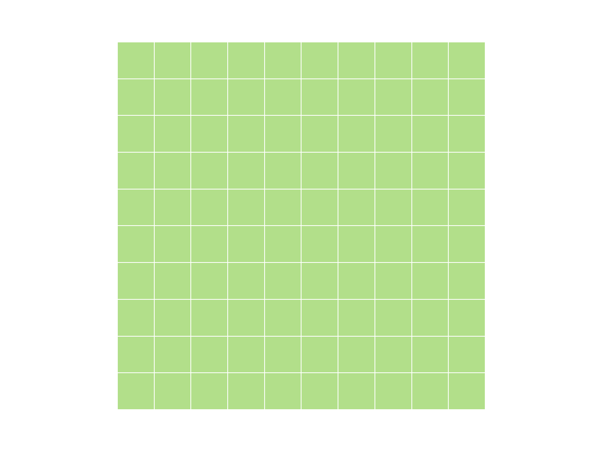

Data
Data
- Data types
- From vectors to matrices and lists
Data types
- logical
- integer
- double
- character
What is it?
x <- 6
y <- 6L
z <- TRUE
typeof(x)## [1] "double"typeof(y)## [1] "integer"typeof(z)## [1] "logical"is.logical(x)## [1] FALSEis.double(x)## [1] TRUEData conversion
Most conversion is implicit. For explicit conversion, use the as.* functions.
Implicit conversion alters everything to the most complex form of data present as follows:
logical -> integer -> double -> character
Explicit conversion usually implies truncation and loss of information.
# Implicit conversion
w <- TRUE
x <- 4L
y <- 5.8
z <- w + x + y
typeof(z)## [1] "double"# Explicit conversion. Note loss of data.
as.integer(z)## [1] 10Class
A class is an extension of the basic data types. We’ll see many examples of these. The class of a basic type will be equal to its type apart from ‘double’, whose class is ‘numeric’ for reasons I don’t pretend to understand.
class(TRUE)## [1] "logical"class(pi)## [1] "numeric"class(4L)## [1] "integer"The type and class of a vector is returned as a scalar. Remember a vector is a set of elements which all have the same type.
class(1:4)## [1] "integer"Mode
There is also a function called ‘mode’ which looks tempting. Ignore it.
Dates and times
Dates in R can be tricky. Two basic classes: Date and POSIXt. The Date class does not get more granular than days. The POSIXt class can handle seconds, milliseconds, etc.
My recommendation is to stick with the “Date” class. Introducing times means introducing time zones and possibility for confusion or error. Actuaries rarely need to measure things in minutes.
x <- as.Date('2010-01-01')
class(x)## [1] "Date"typeof(x)## [1] "double"More on dates
The default behavior for dates is that they don’t follow US conventions.
Don’t do this:
x <- as.Date('06-30-2010')## Error in charToDate(x): character string is not in a standard unambiguous formatBut this is just fine:
x <- as.Date('30-06-2010')If you want to preserve your sanity, stick with year, month, day.
x <- as.Date('2010-06-30')What day is it?
To get the date and time of the computer, use the either Sys.Date() or Sys.time(). Note that Sys.time() will return both the day AND the time as a POSIXct object.
x <- Sys.Date()
y <- Sys.time()More reading on dates
Worth reading the documentation about dates. Measuring time periods is a common task for actuaries. It’s easy to make huge mistakes by getting dates wrong.
The lubridate package has some nice convenience functions for setting month and day and reasoning about time periods. It also enables you to deal with time zones, leap days and leap seconds. Probably more than you need.
mondate was written by an actuary and supports (among other things) handling time periods in terms of months.
Factors
Another gotcha. Factors were necessary many years ago when data collection and storage were expensive. A factor is a mapping of a character string to an integer. Particularly when importing data, R often wants to convert character values into a factor. You will often want to convert a factor into a string.
myColors <- c("Red", "Blue", "Green", "Red", "Blue", "Red")
myFactor <- factor(myColors)
typeof(myFactor)## [1] "integer"class(myFactor)## [1] "factor"is.character(myFactor)## [1] FALSEis.character(myColors)## [1] TRUEAltering factors
# This probably won't give you what you expect
myOtherFactor <- c(myFactor, "Orange")
myOtherFactor## [1] "3" "1" "2" "3" "1" "3" "Orange"# And this will give you an error
myFactor[length(myFactor)+1] <- "Orange"## Warning in `[<-.factor`(`*tmp*`, length(myFactor) + 1, value = "Orange"):
## invalid factor level, NA generated# Must do things in two steps
myOtherFactor <- factor(c(levels(myFactor), "Orange"))
myOtherFactor[length(myOtherFactor)+1] <- "Orange"Avoid factors
Now that you know what they are, you can spend the next few months avoiding factors. When R was created, there were compelling reasons to include factors and they still have some utility. More often than not, though, they’re a confusing hindrance.
If characters aren’t behaving the way you expect them to, check the variables with is.factor. Convert them with as.character and you’ll be back on the road to happiness.
Questions
- Create a logical, integer, double and character variable.
- Can you create a vector with both logical and character values?
- What happens when you try to add a logical to an integer? An integer to a double?
Answers
myLogical <- TRUE
myInteger <- 1:4
myDouble <- 3.14
myCharacter <- "Hello!"
y <- myLogical + myInteger
typeof(y)## [1] "integer"y <- myInteger + myDouble
typeof(y)## [1] "double"From vectors to matrices and lists
A matrix is a vector with higher dimensions.
A list has both higher dimensions, but also different data types.
A matrix
Two ways to construct:
- Use the
matrixfunction. - Change the dimensions of a
vector.
myVector <- 1:100
myMatrix <- matrix(myVector, nrow=10, ncol=10)
myOtherMatrix <- myVector
dim(myOtherMatrix) <- c(10,10)
identical(myMatrix, myOtherMatrix)## [1] TRUEmyMatrix <- matrix(nrow=10, ncol=10)
dim(myMatrix) <- c(25, 4)Matrix metadata
Possible to add metadata. This is typically a name for the columns or rows.
myMatrix <- matrix(nrow=10, ncol=10, data = sample(1:100))
colnames(myMatrix) <- letters[1:10]
head(myMatrix, 3)## a b c d e f g h i j
## [1,] 40 73 62 16 39 21 78 84 82 68
## [2,] 1 13 56 38 76 85 95 89 67 30
## [3,] 29 31 64 65 87 46 54 20 2 59rownames(myMatrix) <- tail(letters, 10)
head(myMatrix, 3)## a b c d e f g h i j
## q 40 73 62 16 39 21 78 84 82 68
## r 1 13 56 38 76 85 95 89 67 30
## s 29 31 64 65 87 46 54 20 2 59Data access for a matrix
Matrix access is similar to vector, but with additional dimensions. For two-dimensional matrices, the order is row first, then column.
myMatrix[2, ]## a b c d e f g h i j
## 1 13 56 38 76 85 95 89 67 30myMatrix[, 2]## q r s t u v w x y z
## 73 13 31 57 35 4 45 44 12 72Data access continued
Single index will return values by indexing along only one dimension.
myMatrix[2]## [1] 1myMatrix[22]## [1] 56Matrix summary
sum(myMatrix)## [1] 5050colSums(myMatrix)## a b c d e f g h i j
## 404 386 627 550 491 495 591 485 433 588rowSums(myMatrix)## q r s t u v w x y z
## 563 550 457 409 442 601 517 609 524 378colMeans(myMatrix)## a b c d e f g h i j
## 40.4 38.6 62.7 55.0 49.1 49.5 59.1 48.5 43.3 58.8More than two dimensions
Like more than two dimensions? Shine on you crazy diamond.
Lists
Lists have data of arbitrary complexity. Any type, any length. Note the new [[ ]] double bracket operator.
x <- list()
typeof(x)## [1] "list"x[[1]] <- c("Hello", "there", "this", "is", "a", "list")
x[[2]] <- c(pi, exp(1))
summary(x)## Length Class Mode
## [1,] 6 -none- character
## [2,] 2 -none- numericstr(x)## List of 2
## $ : chr [1:6] "Hello" "there" "this" "is" ...
## $ : num [1:2] 3.14 2.72Lists

[ vs. [[
[ is (almost always) used to set and return an element of the same type as the containing object.
[[ is used to set and return an element of the same type as the contained object.
This is why we use [[ to set an item in a list.
Don’t worry if this doesn’t make sense yet. It’s difficult for most R programmers.
Lists can contain other lists as elements.
y <- list()
y[[1]] <- "Lou Reed"
y[[2]] <- 45
x[[3]] <- yList metadata
Again, typically names. However, these become very important for lists. Names are handled with the special $ operator. $ permits access to a single element. (A single element of a list can be a vector!)
y[[1]] <- c("Lou Reed", "Patti Smith")
y[[2]] <- c(45, 63)
names(y) <- c("Artist", "Age")
y$Artist## [1] "Lou Reed" "Patti Smith"y$Age## [1] 45 63lapply
lapply is one of many functions which may be applied to lists. Can be difficult at first, but very powerful. Applies the same function to each element of a list
myList <- list(firstVector = c(1:10)
, secondVector = c(89, 56, 84, 298, 56)
, thirdVector = c(7,3,5,6,2,4,2))
lapply(myList, mean)## $firstVector
## [1] 5.5
##
## $secondVector
## [1] 116.6
##
## $thirdVector
## [1] 4.142857lapply(myList, median)## $firstVector
## [1] 5.5
##
## $secondVector
## [1] 84
##
## $thirdVector
## [1] 4lapply(myList, sum)## $firstVector
## [1] 55
##
## $secondVector
## [1] 583
##
## $thirdVector
## [1] 29Summary functions
Because lists are arbitrary, we can’t expect functions like sum or mean to work. Use lapply to summarize particular list elements.
Questions
- Create a list with two elements. Have the first element be a vector with 100 numbers. Have the second element be a vector with 100 dates. Give your list the names: “Claim” and “Accident Date”.
- What is the average value of the first list element?
Data frames
All of that was prologue to this. The data frame is a seminal concept in R. Most statistical operations expect one and they are the most common way to pass data in and out of R.
Although critical to understand, this is very, very easy to get. What’s a data frame? It’s a table. That’s it.
A data frame is a list of vectors. Each vector may have a different data type, but all must be the same length.
Data frames
- Creating
- Referencing
- Ordering
- Adding new columns
- Subsetting
- Summarizing
- Merging
Creating a data frame
set.seed(1234)
State = rep(c("TX", "NY", "CA"), 10)
EarnedPremium = rlnorm(length(State), meanlog = log(50000), sdlog=1)
EarnedPremium = round(EarnedPremium, -3)
Losses = EarnedPremium * runif(length(EarnedPremium), min=0.4, max = 0.9)
df = data.frame(State, EarnedPremium, Losses, stringsAsFactors=FALSE)Basic properties of a data frame
summary(df)## State EarnedPremium Losses
## Length:30 Min. : 5000 Min. : 2034
## Class :character 1st Qu.: 21250 1st Qu.: 12461
## Mode :character Median : 30500 Median : 17363
## Mean : 61500 Mean : 39006
## 3rd Qu.: 63750 3rd Qu.: 41465
## Max. :560000 Max. :411179str(df)## 'data.frame': 30 obs. of 3 variables:
## $ State : chr "TX" "NY" "CA" "TX" ...
## $ EarnedPremium: num 15000 66000 148000 5000 77000 83000 28000 29000 28000 21000 ...
## $ Losses : num 12486 27781 82671 2034 40002 ...More basic properties of a data frame
names(df)## [1] "State" "EarnedPremium" "Losses"colnames(df)## [1] "State" "EarnedPremium" "Losses"length(df)## [1] 3dim(df)## [1] 30 3nrow(df)## [1] 30ncol(df)## [1] 3And still more basic properties
head(df)## State EarnedPremium Losses
## 1 TX 15000 12486.254
## 2 NY 66000 27781.290
## 3 CA 148000 82671.479
## 4 TX 5000 2034.375
## 5 NY 77000 40002.490
## 6 CA 83000 62519.527head(df, 2)## State EarnedPremium Losses
## 1 TX 15000 12486.25
## 2 NY 66000 27781.29tail(df)## State EarnedPremium Losses
## 25 TX 25000 12452.183
## 26 NY 12000 10191.483
## 27 CA 89000 52932.740
## 28 TX 18000 9997.837
## 29 NY 49000 23520.702
## 30 CA 20000 16961.858Referencing
Very similar to referencing a 2D matrix.
df[2,3]
df[2]
df[2,]
df[2, -1]More referencing
Note the $ operator to access named columns. A data frame uses the ‘name’ metadata in the same way as a list.
df$EarnedPremium
# Columns of a data frame may be treated as vectors
df$EarnedPremium[3]
df[2:4, 1:2]
df[, "EarnedPremium"]
df[, c("EarnedPremium", "State")]Ordering
order(df$EarnedPremium)## [1] 4 26 1 12 28 18 30 10 19 13 25 7 9 8 17 11 22 23 16 29 14 21 2
## [24] 5 24 6 27 15 3 20df = df[order(df$EarnedPremium), ]Altering and adding columns
df$LossRatio = df$EarnedPremium / df$Losses
df$LossRatio = 1 / df$LossRatioEliminating columns
df$LossRatio = NULL
df = df[, 1:2]rbind, cbind
rbind will append rows to the data frame. New rows must have the same number of columns and data types. cbind must have the same number of rows as the data frame.
dfA = df[1:10,]
dfB = df[11:20, ]
rbind(dfA, dfB)
dfC = dfA[, 1:2]
cbind(dfA, dfC)Merging
dfRateChange = data.frame(State =c("TX", "CA", "NY"), RateChange = c(.05, -.1, .2))
df = merge(df, dfRateChange)Merging is VLOOKUP on steroids. Basically equivalent to a JOIN in SQL.
Altering column names
df$LossRation = with(df, Losses / EarnedPremium)
names(df)## [1] "State" "EarnedPremium" "RateChange" "LossRation"colnames(df)[4] = "Loss Ratio"
colnames(df)## [1] "State" "EarnedPremium" "RateChange" "Loss Ratio"Subsetting - The easy way
dfTX = subset(df, State == "TX")
dfBigPolicies = subset(df, EarnedPremium >= 50000)Subsetting - The hard(ish) way
dfTX = df[df$State == "TX", ]
dfBigPolicies = df[df$EarnedPremium >= 50000, ]Subsetting - Yet another way
whichState = df$State == "TX"
dfTX = df[whichState, ]
whichEP = df$EarnedPremium >= 50000
dfBigPolicies = df[whichEP, ]Subsetting
I use each of these three methods routinely. They’re all good.
Summarizing
sum(df$EarnedPremium)## [1] 1845000sum(df$EarnedPremium[df$State == "TX"])## [1] 233000aggregate(df[,-1], list(df$State), sum)## Group.1 EarnedPremium RateChange Loss Ratio
## 1 CA 673000 -1.0 8.257125
## 2 NY 939000 2.0 11.755127
## 3 TX 233000 0.5 18.745791Summarizing visually - 1
dfByState = aggregate(df$EarnedPremium, list(df$State), sum)
colnames(dfByState) = c("State", "EarnedPremium")
barplot(dfByState$EarnedPremium, names.arg=dfByState$State, col="blue")
Summarizing visually - 2
dotchart(dfByState$EarnedPremium, dfByState$State, pch=19)Advanced data frame tools
- dplyr
- tidyr
- reshape2
- data.table
Final note on data frames
Roughly 90% of your work in R will involve manipulation of data frames. There are truckloads of packages designed to make manipulation of data frames easier. Take your time getting to learn these tools. They’re all powerful, but they’re all a little different. I’d suggest learning the functions in base R first, then moving on to tools like dplyr and data.table. There’s a lot to be gained from understanding the problems those packages were created to solve.
Reading data
myData = read.csv("SomeFile.csv")Reading from Excel
Actually there are several ways: * XLConnect * xlsx * Excelsi-r
library(XLConnect)
wbk = loadWorkbook("myWorkbook.xlsx")
df = readWorksheet(wbk, someSheet)Reading from the web - 1
URL = "http://www.casact.org/research/reserve_data/ppauto_pos.csv"
df = read.csv(URL, stringsAsFactors = FALSE)Reading from the web - 2
library(XML)
URL = "http://www.pro-football-reference.com/teams/nyj/2012_games.htm"
games = readHTMLTable(URL, stringsAsFactors = FALSE)Reading from a database
library(RODBC)
myChannel = odbcConnect(dsn = "MyDSN_Name")
df = sqlQuery(myChannel, "SELECT stuff FROM myTable")Read some data
df = read.csv("../data/StateData.csv")View(df)Questions
- Load the data from “StateData.csv” into a data frame.
- Which state has the most premium?